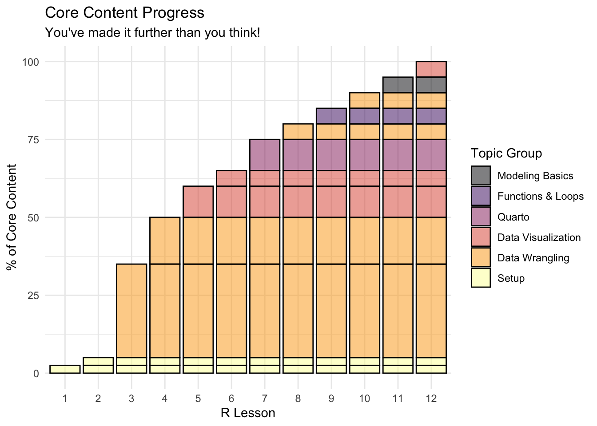
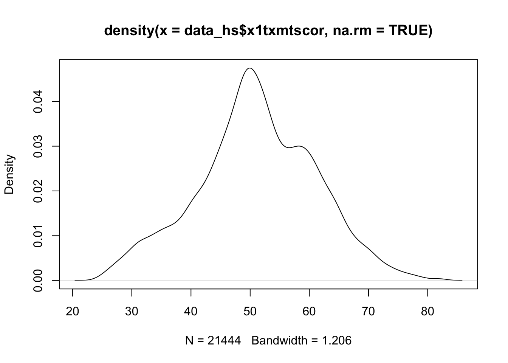
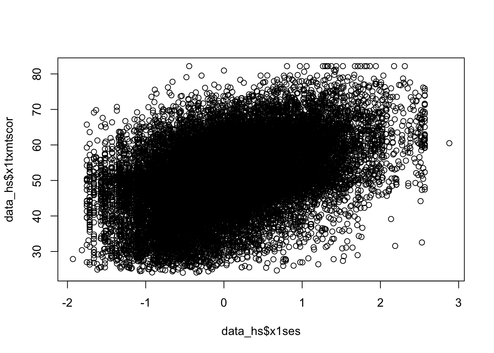
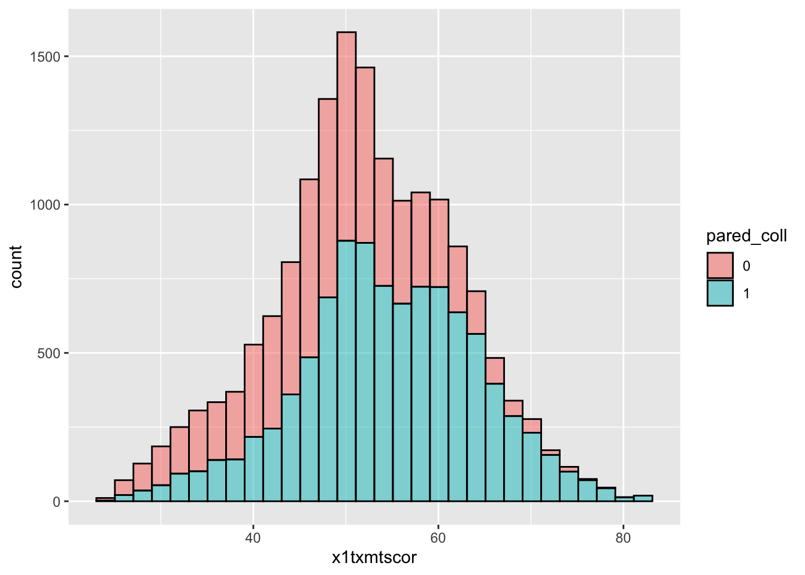
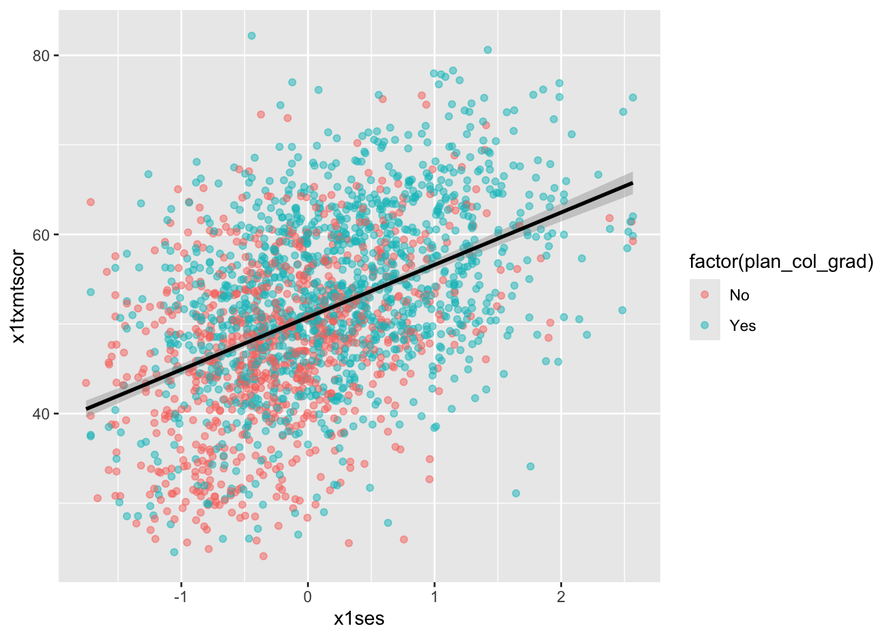

I: Basics
Progress Check-In
- In keeping with the theme of today’s lesson, we made a little plot that represents roughly the breakdown of “core R content” covered in each lesson (as in, the basic knowledge you need to go off and do your own data work)
- Congratulations, after the first two data-wrangling lessons, you’re already half-way done!
- Over the next three weeks, we will cover how to communicate the results of these basic skills using visualization with
ggplot2and report generation withquarto - Then, we will get into the final series of lessons, each of which gives you a little taste of some more sophisticated and/or niche applications of R
- Throughout all this, we will continue to become familiar with the basics of data wrangling, as that really is the key to it all
- Any questions or concerns?
Setup
- One key part of understanding your data and presenting your analyses lies in making plots, which we will cover through this section of the class
Choosing a Plot
The main problem does not lie in the creation of a chart. R can do (almost) any chart you can dream up. The diffculty consists in thinking hard about what is it that you want to show to the reader. What is your message? What do you want to show?
- What types of variables do we want to visualize?
- How many variables?
| # variables | Type of variables | Plot type |
|---|---|---|
| One | Categorical | bar chart |
| Continuous | histogram | |
| density plot | ||
| box plot | ||
| Two | Cat - Cat | grouped bar chart |
| Cat - Con | grouped box plot | |
| Con - Con | scatterplot | |
| line plot |
Many more graphs. Feel free to explore R graph gallery.
There are multiple graphing systems in R, but we are going to focus on two (primarily one);
Base R Plots
- Base R (i.e., R without any packages loaded) can create some basic plots
- They aren’t the prettiest, so we wouldn’t recommend them in reports and papers
- But, they’re super-easy and quick to create, so they’re perfect for quickly checking your data during the exploration phase
- They aren’t the prettiest, so we wouldn’t recommend them in reports and papers
ggplot2 Plots
ggplotorggplot2(ggplot was originally a different library, but doesn’t exist anymore)- The gg stands for grammar of graphics
- This is a whole world of detail to dive into if you want
- The basic idea is that the graphs are made up of layers
- This allows us to create some really cool and detailed plots
- Strongly recommend
ggplot2for making plots you want to share- Even stata users admit the plots can’t match
ggplot2
- Even stata users admit the plots can’t match
- Strongly recommend
- This allows us to create some really cool and detailed plots
Libraries
We’re using two libraries today (plus the base R plot functions)
The ggplot2 library is part of the
tidyverse- We don’t need to load it separately (we can just use
library(tidyverse)as always)
- We don’t need to load it separately (we can just use
## ---------------------------
##' [Libraries]
## ---------------------------
library(tidyverse)- We’re also going to use haven,
- Haven allows us to read in data files from other software such as SPSS, SAS, and Stata
- We’ll use it to read in a Stata (
*.dta) version of the small HSLS data we’ve used before- The Stata version, unlike the plain
.csvversion, has labels for the variables and values, which will be useful when plotting
- The Stata version, unlike the plain
- We’ll use it to read in a Stata (
- Haven is also part of the
tidyversebut not loaded by default - We could load the package with
library(haven), but, if we only need one function from a package, it’s often easier to call it directly (plus this is useful trick to know)library(<package>)pre-loads all the functions so that we can easily call them with just the function name- If you only need one function from a package, or, you want to use a function from a package with a conflict (i.e., two packages with functions with the same name) we can specify where the function should come from like this
<package>::<function>- I.e.,
haven::read_dta()
## ---------------------------
##' [Input data]
## ---------------------------
## read_dta() ==> read in Stata (*.dta) files
data_hs <- haven::read_dta("data/hsls-small.dta")
## read_csv() ==> read in comma separated value (*.csv) files
data_ts <- read_csv("data/sch-test/all-schools.csv")Note that since we have two data files this lesson, we gave them unique names instead of the normal
data:data_hs:=hsls-small.dtadata_ts:=all-schools.csv
Plots using base R
- Even though new graphics libraries have been developed, the base R graphics system remains powerful
- The base system is also very easy to use in a pinch
- Good for a quick visual of a data distribution that’s just for ourselves
- Note that for the next few plots, let’s not worry too much about how they look
- Specifically, the axis labels won’t look very nice
- Also note that we’ll have to switch to using the base R data frame
$notation to pull out the columns we want- In short, to reference a column in a data frame in base R, you say
dataframe$column - If you need some more information on using
$notation, check out the supplemental lesson on data wrangling with base R.
- In short, to reference a column in a data frame in base R, you say
Histogram
- For continuous variables, a histogram is a useful plot
- Though the
hist()function has many options to adjust how it looks- The default settings work really well if you just want a quick look at the distribution.
## histogram of math scores (which should be normal by design)
hist(data_hs$x1txmtscor)Quick exercise
Check the distribution of the students’ socioeconomic score (SES).
Density
- Density plots are also really helpful for checking the distribution of a variable
- Base R doesn’t have formal density plot function, but you can get a density plot with a trick
plot()thedensity()of a continuous variable
Quick question: What does the
na.rm = TRUEand why might we need it?
## density plot of math scores
density(data_hs$x1txmtscor, na.rm = TRUE) |>
plot()
Quick exercise
First, plot the density of SES Then, add the
colargument inplot()to change the color of the line to"red"
Box plot
- A box plot will let you see the distribution of a continuous variable at specific values of a categorical variable
- For example, test scores ranges at each student expectation level
- Call a box plot using the
boxplot()function- This one is a little trickier because it uses the R formula construction to set the continuous variable against the discrete variable
- The formula uses a tilde,
~, and should be constructed like this:<continuous var> ~ <discrete var>- We will talk in more detail about formulas in the Programming: Modeling Basics lesson
- As we are using a formula, notice how we can use the
data = data_hsargument instead of addingdata_hs$in front of the variable names, which saves some typing
## box plot of math scores against student expectations
boxplot(x1txmtscor ~ x1stuedexpct, data = data_hs)
From the boxplot, we can see that math test scores tend to increase as students’ educational expectations increase (remember that 11 means “I don’t know [how far I’ll go in school]”), though there’s quite a bit of overlap in the marginal distributions.
Scatterplot
- Plot two continuous variables against one another using the base
plot()function - The main way to make a scatter plot is
plot(x, y)- The
xis the variable that will go on the x-axis andythe one that will go on the y-axis
- The
## scatter plot of math against SES
plot(data_hs$x1ses, data_hs$x1txmtscor)
From the scatter plot we see the data seem to show a positive correlation between socioeconomic status and math test score, there’s also quite a bit of variation in that association (notice that the cloud-like nature of the circles).
Quick exercise
Rerun the above plot, but this time store it in an object,
plot_1, then get the plot to print out
Plots using ggplot2
ggplot2is R users’ primary system for making plots- It is based on the idea of a grammar of graphics
- Just as we can use finite rules of a language grammar to construct an endless number of unique sentences, so too can we use a few graphical grammatical rules to make an endless number of unique figures.
- The ggplot2 system is too involved to cover in all of its details
- But that’s kind of the point of the grammar of graphics
- Once you see how it’s put together, you can anticipate the commands you need to build your plot.
- We’ll start by covering the same plots as above.
Histogram
As the main help site says, all ggplot2 plots need three things:
[data]: The source of the variables you want to plot
[aesthetics]: How variables in the data map onto the plot (e.g., what’s on the x-axis? what’s on the y-axis?)
[geom]: The geometry of the figure or the kind of figure you want to make (e.g., what do you want to do with those data and mappings? A line graph? A box plot?…)
We’ll start by making a histogram again
To help make these pieces clearer, I’ll use the argument names when possible
- As you become familiar, you probably will stop naming some of these core arguments
The first function, which initializes the plot is
ggplot()- Its first argument is the data, which want to use
data_hs
- Its first argument is the data, which want to use
## init ggplot
ggplot(data = data_hs)
- …nothing! Well, not nothing, but no histogram.
- That’s because the plot knows the data but doesn’t know what do with it. What do we want?
- Since we want a histogram, we add the
geom_histogram()function to the existing plot object with a plus sign(+). Once we do that, we’ll try to print the plot again… - The aesthetic mappings, that is, which variables go where or how they function on the plot, go inside the
aes()function.- Since we only have one variable,
x1txmtscor, it is assigned tox.
- Since we only have one variable,
## add histogram instruction (notice we can add pieces using +)
ggplot(data = data_hs) +
geom_histogram(mapping = aes(x = x1txmtscor))Success!
Quick excercise: try assigning the historgram to an object, then getting it to print out
- As you can see, the code to make a ggplot2 figure looks a lot like what we’ve seen with other tidyverse libraries, e.g. dplyr.
- The key difference between ggplot2 and our previous code, however, is that
- Up to now we have used the pipe (
|>) to pass output to the next function - ggplot2 uses a plus sign (
+) add new layers to the plot
- Up to now we have used the pipe (
- Layers is exactly how you want to think about ggplots
- The
ggplot()is the base layer of the graph- Anything you place in here will become the default for every other layer
- For example, if we say
data = datainggplot(), that will be the default data for every layer- Generally we will specify the data here, and
mapping = aes()in the specific plots
- Generally we will specify the data here, and
- For example, if we say
- Anything you place in here will become the default for every other layer
- The
Quick question(s): Why might that make sense? Which is more likely to change? Are there times you might want to set an aesthetic for the whole plot?
Density
- Unlike the base R graphics system, ggplot2 does have a density plotting command
geom_density()- The rest of the code remains the same as for
geom_histogram()
- The rest of the code remains the same as for
## density
ggplot(data = data_hs) +
geom_density(mapping = aes(x = x1txmtscor))Quick exercise
If we wanted to see the histogram and density plot on top of each other, what might we do? Give it a go, and, tell me why it didn’t work…
ggplot(data = data_hs) +
geom_histogram(mapping = aes(x = x1txmtscor)) +
geom_density(mapping = aes(x = x1txmtscor))- The issue is that the histogram y scale is much much larger than the density
- To fix that, let’s modify the
geom_histogram()aesthetic to use thedensityfunction rather than the raw counts- We use the
after_stat()function, which basically means after ggplot calculates the statistics, it converts them to density
- We use the
- To fix that, let’s modify the
## histogram with density plot overlapping
ggplot(data = data_hs) +
geom_histogram(mapping = aes(x = x1txmtscor, y = after_stat(density))) +
geom_density(mapping = aes(x = x1txmtscor))It worked, but it’s not the greatest visual since the colors are the same and the density plot is thin with no fill.
Adding to what came before, the
geom_histogram()andgeom_density()both take on new arguments that change the defaultsNow the resulting plot should look nicer and be easier to read
## histogram with density plot overlapping (add color to see better)
ggplot(data = data_hs) +
geom_histogram(mapping = aes(x = x1txmtscor, y = after_stat(density)),
color = "black",
fill = "white") +
geom_density(mapping = aes(x = x1txmtscor),
fill = "red",
alpha = 0.2)Quick exercise
Try changing some of the arguments in the last plot. What happens when you change
alpha(keep the value between 0 and 1)? What does thecolorargument change? Andfill? What happens if you switch thegeom_*()functions, callgeom_histogram()after you callgeom_density()?
- A critical thing to note, in the previous plot
color,fill, andalphawere all outside theaes()- This means they take a single value and apply it uniformly, it should portray no information and just change the appearance
- To use these elements to portray information, we need to place the arguments inside
aes()like we will do in the next plot
Two-way
Plotting the difference in a continuous distribution across groups is a common task
Let’s see the difference between student math scores between students with parents who have any postsecondary degree and those without.
Since we’re using data that was labeled in Stata, we’ll see the labels when we use
count()
## see the counts for each group
data_hs |> count(x1paredu)# A tibble: 7 × 2
x1paredu n
<dbl+lbl> <int>
1 1 [Less than high school] 1010
2 2 [High school diploma or GED] 5909
3 3 [Associate's degree] 2549
4 4 [Bachelor's degree] 4102
5 5 [Master's degree] 2116
6 7 [Ph.D/M.D/Law/other high lvl prof degree] 1096
7 NA 6721- We can see that all values of
x1paredugreater than 2 represent parents with some college credential- Since we want only two distinct groups, we can use
mutate,ifelseand the operator>=to make a new 0/1 binary variable. - If a value ofx1pareduis above 3, then the new indicatorpared_collwill be 1; if not, 0.
- Since we want only two distinct groups, we can use
NOTE that in the Stata version of hsls_small, all the missing values, which are normally negative numbers, have already been properly converted to NA values. That’s why we see a count column for NA and not labels for missingness that we might have expected based on prior lessons.
The
ggplot()function doesn’t need to use our full dataIn fact, our data needs to be set up a bit differently to make this plot
We’ll make a new temporary data object that only has the data we need.
Notice, after we create
pared_coll, we use thefactor()command to make it a factor type of variable- This is R’s built in way of handling categorical variables (i.e., so that is doesn’t think it’s continuous)
- Creating factors is really useful for plotting, and later on for statistical models
## need to set up data
plot_data <- data_hs |>
## select the columns we need
select(x1paredu, x1txmtscor) |>
## can't plot NA so will drop
drop_na() |>
## create new variable that == 1 if parents have any college, then make it a factor
mutate(pared_coll = ifelse(x1paredu >= 3, 1, 0),
pared_coll = factor(pared_coll)) |>
## drop (using negative sign) the original variable we don't need now
select(-x1paredu)
## show
head(plot_data)# A tibble: 6 × 2
x1txmtscor pared_coll
<dbl+lbl> <fct>
1 59.4 1
2 47.7 1
3 64.2 1
4 49.3 1
5 62.6 1
6 58.1 1 - To plot against the two groups we’ve made, we need to add it to the aesthetic feature,
aes() - The math score,
x1txmtscor, is still mapped tox - Since we want two side-by-side histograms, we set the
fillaesthetic to our new indicator variable
## two way histogram
ggplot(plot_data) +
geom_histogram(aes(x = x1txmtscor,
fill = pared_coll),
alpha = 0.5,
color = "black")
- By assigning
pared_collto thefillaesthetic, we can see a difference in the distribution of math test scores between students whose parents have at least some college and those whose parents do not- Note: there are more students with no parental college education, so that whole histogram is bigger
- If we want to compare the shape of distribution more easily, we should use
geom_density()
- If we want to compare the shape of distribution more easily, we should use
- Note: there are more students with no parental college education, so that whole histogram is bigger
## two way density
ggplot(plot_data) +
geom_density(aes(x = x1txmtscor,
fill = pared_coll),
alpha = 0.5,
color = "black")Quick question
Why does the
color = "black"not mean we have two black density/histogram plots? What happens if you remove it? Can you make it<something else> = "black"to get rid of the colors?
Box plot
- By this point, you’re hopefully seeing the pattern in how ggplot2 figures are put together
- To make a box plot, we need to add a
ymapping to theaes()in addition to thexmapping - We’ve also added the same variable to
fillas we did tox- We do this so that in addition to having different box and whisker plots along the x-axis, each plot is given its own color
- Notice: this time, we just threw
factor()around the variable in the plot, rather than using mutate to change the data
Quick question: What do you think the pros and cons of using
factor()in the plot over mutating the data might be?
## box plot using both factor() and as_factor()
ggplot(data = data_hs,
mapping = aes(x = factor(x1paredu),
y = x1txmtscor,
fill = factor(x1paredu))) +
geom_boxplot()
- In a way, this plot is similar to the dual histogram above
- But since we want to see the distribution of math scores across finer-grained levels of parental education, the box and whisker plot is clearer than trying to overlap seven histograms.
Quick exercise
We will get more into making things look pretty in Data Vizualization II, but, what is a real problem with this graph? Does it even need to be there?
Scatterplot
- To make a scatter plot, make sure that the
aes()has mappings for thexaxis andyaxis and then usegeom_point()to plot. - To make things easier to see (remembering the over-crowded cloud from the base R plot above), we’ll reduce the data to 10% of the full sample using
sample_frac()from dplyr - We’ll also limit our 10% to those who aren’t missing information about student education expectations
## sample 10% to make figure clearer
data_hs_10 <- data_hs |>
## drop observations with missing values for x1stuedexpct
drop_na(x1stuedexpct) |>
## sample
sample_frac(0.1)
## scatter
ggplot(data = data_hs_10) +
geom_point(mapping = aes(x = x1ses, y = x1txmtscor))
- Now that we have our scatter plot, let’s say that we want to add a third dimension
- Specifically, we want to change the color of each point based on whether a student plans to earn a Bachelor’s degree or higher
- That means we need a new dummy variable that is 1 for those with BA/BS plans and 0 for others.
- Specifically, we want to change the color of each point based on whether a student plans to earn a Bachelor’s degree or higher
We can look at the student base year expectations with count():
## see student base year plans
data_hs |>
count(x1stuedexpct)# A tibble: 12 × 2
x1stuedexpct n
<dbl+lbl> <int>
1 1 [Less than high school] 93
2 2 [High school diploma or GED] 2619
3 3 [Start an Associate's degree] 140
4 4 [Complete an Associate's degree] 1195
5 5 [Start a Bachelor's degree] 115
6 6 [Complete a Bachelor's degree] 3505
7 7 [Start a Master's degree] 231
8 8 [Complete a Master's degree] 4278
9 9 [Start Ph.D/M.D/Law/other prof degree] 176
10 10 [Complete Ph.D/M.D/Law/other prof degree] 4461
11 11 [Don't know] 4631
12 NA 2059- We see that
x1stuedexpct >= 6means a student plans to earn a Bachelor’s degree or higher. - But since we need to account for the fact that 11 means “I don’t know”, we need to make sure our test includes
x1stuedexpct < 11 - Remember from a prior lesson that we can connect these two statements together with the operator
& - Let’s create our new variable
- Notice this time when we create the factor, we specify
levelsandlabels- This applies labels much like the
havenversion of our data has, which will print out in our plot
- This applies labels much like the
- Notice this time when we create the factor, we specify
## create variable for students who plan to graduate from college
data_hs_10 <- data_hs_10 |>
mutate(plan_col_grad = ifelse(x1stuedexpct >= 6 & x1stuedexpct < 11,
1, # if T: 1
0), # if F: 0
plan_col_grad = factor(plan_col_grad,
levels = c(0, 1),
labels = c("No", "Yes"))) - Now that we have our new variable
plan_col_grad, we can add it thecoloraesthetic,aes()ingeom_point().
## scatter
ggplot(data = data_hs_10,
mapping = aes(x = x1ses, y = x1txmtscor)) +
geom_point(mapping = aes(color = plan_col_grad), alpha = 0.5)
Quick exercise
Remake the plot so the variables on each axis are flipped
Fitted lines
- It’s often helpful to plot fitted lines against a scatter plot to help see the underlying trend
- There are a number of ways to do this with the
geom_smooth()function
- There are a number of ways to do this with the
Linear fit
- Setting
method = lmingeom_smooth()will fit a simple straight line of best fit with 95% confidence interval shaded around it. - Since we want the points and the line to share the same
xandyaesthetics, let’s put them in theggplot()base layer
## add fitted line with linear fit
ggplot(data = data_hs_10, mapping = aes(x = x1ses, y = x1txmtscor)) +
geom_point(mapping = aes(color = factor(plan_col_grad)), alpha = 0.5) +
geom_smooth(method = lm, color = "black")
Loess
- Finally, we can skip trying to adjust a linear line and just fit a LOESS curve, which is a smooth line produced by fitting a large number of local polynomial regressions on subsets of the data.
## add fitted line with loess
ggplot(data = data_hs_10, mapping = aes(x = x1ses, y = x1txmtscor)) +
geom_point(mapping = aes(color = factor(plan_col_grad)), alpha = 0.5) +
geom_smooth(method = loess, color = "black")
- To be clear, these semi-automated lines of best fit should not be used to draw final conclusions about the relationships in your data
- You will want to do much more analytic work to make sure any correlations you observe aren’t simply spurious and that fitted lines are telling you something useful
- That said, fitted lines via
ggplot2can be useful when first trying to understand your data or to more clearly show observed trends.
Line graph
- When you want to show changes in one variable as a function of another variable
- e.g., changes in test scores over time
- A line graph is often a good choice.
- Since our
hsls-smalldata is cross-sectional, we’ll shift to using our school test score datadata_tsfrom Data Wrangling II
Quick question: What does cross-sectional mean? What is the opposite of it?
- As a reminder, here’s what the schools data looks like
## show test score data
data_ts# A tibble: 24 × 5
school year math read science
<chr> <dbl> <dbl> <dbl> <dbl>
1 Bend Gate 1980 515 281 808
2 Bend Gate 1981 503 312 814
3 Bend Gate 1982 514 316 816
4 Bend Gate 1983 491 276 793
5 Bend Gate 1984 502 310 788
6 Bend Gate 1985 488 280 789
7 East Heights 1980 501 318 782
8 East Heights 1981 487 323 813
9 East Heights 1982 496 294 818
10 East Heights 1983 497 306 795
# ℹ 14 more rowsSimple Line-Graph
- To keep it simple for our first line plot, we’ll filter our plot data to keep only scores for one school
- Notice how we can do that directly with pipes inside the
ggplot()function
- Notice how we can do that directly with pipes inside the
- We want to see changes in test scores over time, so we’ll map
yearto thexaxismathto theyaxis
- To see a line graph, we add
geom_line().
## line graph
ggplot(data = data_ts |> filter(school == "Spottsville"),
mapping = aes(x = year, y = math)) +
geom_line()QUICK EXERCISE
Change the school in
filter()to “East Heights” and then “Bend Gate”.
Multiple-Line Graphs
- Easy enough, but let’s say that we want to add a third dimension — to show math scores for each school in the same plot area. -To do this, we can map a third aesthetic to
school. Looking at the help file forgeom_line(), we see that lines (a version of a path) can takecolor, which means we can change line color based on a variable.
The code below is almost exactly the same as before less two things:
- We don’t filter
data_tsthis time, because we want all schools - We add
color = schoolinsideaes()
## line graph for math scores at every school over time
ggplot(data = data_ts,
mapping = aes(x = year, y = math, color = school)) +
geom_line()- This is nice (though maybe a little messy at the moment) because it allows us to compare math scores across time across schools.
- But we have two more test types — reading and science — that we would like to include as well
- One approach that will let us add yet another dimension is to use facets
Facets
With facets, we can put multiple plots together, each showing some subset of the data
For example, instead of plotting changes in math scores across schools over time on the same plot area (only changing the color), we can use
facet_wrap()to give each school its own little plot.Compared to the code just above, notice how we’ve removed
color = schoolfromaes()and includedfacet_wrap(~school)- The tilde (
~) works like the tilde inplot(y ~ x)above: it means “plot against or by X”. In this case, we are plotting math test scores over time by each school.
- The tilde (
## facet line graph
ggplot(data = data_ts,
mapping = aes(x = year, y = math)) +
facet_wrap(~ school) +
geom_line()
Is this faceted plot better than the color line plot before it?
Whether you use the first or the second would largely depend on your specific data and presentation needs.
Faceting has a clearer advantage, however, when you want to include the fourth level of comparison:
- scores across
- time across
- schools
- different tests.
To make this comparison, we first need to reshape our data, which is currently long in
year, to be long intest, too.- As we saw in Data Wrangling II, we’ll use
pivot_longer()to place each test type in its own column (test) with thescorenext to it.
- As we saw in Data Wrangling II, we’ll use
## reshape data long
data_ts_long <- data_ts |>
pivot_longer(cols = c("math","read","science"), # cols to pivot long
names_to = "test", # where col names go
values_to = "score") # where col values go
## show
data_ts_long# A tibble: 72 × 4
school year test score
<chr> <dbl> <chr> <dbl>
1 Bend Gate 1980 math 515
2 Bend Gate 1980 read 281
3 Bend Gate 1980 science 808
4 Bend Gate 1981 math 503
5 Bend Gate 1981 read 312
6 Bend Gate 1981 science 814
7 Bend Gate 1982 math 514
8 Bend Gate 1982 read 316
9 Bend Gate 1982 science 816
10 Bend Gate 1983 math 491
# ℹ 62 more rowsQUICK EXERCISE
If we have 4 schools, 6 years, and 3 tests, how many observations should
data_ts_longhave in total? Does it?
- With our reshaped data frame, we now reintroduce
colorinto theaes(), this time set totest - We make one other change:
y = scorenow, since that’s the column for test scores in our reshaped data - All else is the same.
## facet line graph, with colour = test and ~school
ggplot(data = data_ts_long) +
geom_line(mapping = aes(x = year, y = score, color = test)) +
facet_wrap(~school)
- Hmm, currently, each test score is on its own scale, which means this plot isn’t super useful
- The difference between the types of score is so much greater than the variance within the test scores, we have 3 pretty flat lines
- But maybe what we really want to know is how they’ve changed relative to where they started
- You can imagine a superintendent who took over in 1980 would be keen to know how scores have changed during their tenure.
- To see this, we need to standardize the test scores
- Often in statistics, you will mean-standardize a variable
- Difference between current score and the mean of the score, divided by the standard deviation of the score
- You’ve probably heard of this as a “Z-score” in stats classes
- Often in statistics, you will mean-standardize a variable
\[ \frac{x_i - \bar{x}}{\sigma} \]
In simple terms, this puts all scores on the same scale
To get the graph we want, we are going to do something very similar, but instead of using the mean of the score, we are going to take the score in 1980
- Therefore, every subsequent year will show the change since 1980, and since it’s standardized, all test scores will be on the same scale
data_ts_long_std <- data_ts_long |>
group_by(test, school) |>
arrange(year) |>
mutate(score_year_one = first(score),
## note that we're using score_year_one instead of mean(score)
score_std_sch = (score - score_year_one) / sd(score)) |>
ungroup()
print(data_ts_long_std, n = 13)# A tibble: 72 × 6
school year test score score_year_one score_std_sch
<chr> <dbl> <chr> <dbl> <dbl> <dbl>
1 Bend Gate 1980 math 515 515 0
2 Bend Gate 1980 read 281 281 0
3 Bend Gate 1980 science 808 808 0
4 East Heights 1980 math 501 501 0
5 East Heights 1980 read 318 318 0
6 East Heights 1980 science 782 782 0
7 Niagara 1980 math 514 514 0
8 Niagara 1980 read 292 292 0
9 Niagara 1980 science 787 787 0
10 Spottsville 1980 math 498 498 0
11 Spottsville 1980 read 288 288 0
12 Spottsville 1980 science 813 813 0
13 Bend Gate 1981 math 503 515 -1.07
# ℹ 59 more rowsLet’s walk through that code
- Start with our
data_ts_longand assign the output todata_ts_long_std - Group the data by both test and school
- This is for us to be able to get a starting point for each test at each school
- Arrange the data in order of date (it already was, but since we are reliant on that, it’s best to check)
- Create a new variable which is the
first()score (since we are grouped by test and school, it will do it for each test/school combo) - Create another new variable
score_std_schusing thescore_year_oneas zero - Ungroup the data since we are done with the calculation
## facet line graph, with colour = test and ~school
ggplot(data = data_ts_long_std) +
geom_line(mapping = aes(x = year, y = score_std_sch, color = test)) +
facet_wrap(~school)
And there we have a really informative plot, showing how test scores of all types have changed since 1980 across all four schools. Hopefully this shows that good plots and good data wrangling (and sometimes a little bit of stats) go hand in hand!
Use the hsls-small.dta data set (the version used in this class) make plots that help answer each of the following questions
- Throughout, you should account for missing values by dropping them
- Do not worry about axis labels or other visual elements, that is covered next week
Hint: You’re going to need the code book to identify the necessary variables
Also note, your final project proposals are due this week as well
Question One
a) How does student socioeconomic status differ between students who ever attended college and those who did not?
Question Two
a) How do educational expectations (of both students and parents) differ by high school completion status?
Hint: You will want to borrow some code from last week’s assignment here
Question Three
a) What is the relationship between student socioeconomic status and math test score?
Submission
Once complete turn in the .qmd file (it must render/run) and the rendered PDF to Canvas by the due date (usually Tuesday 12:00pm following the lesson). Assignments will be graded before next lesson on Wednesday in line with the grading policy outlined in the syllabus.